이 글은 전체 2편 중 2편입니다. 긴 영상을 주제 흐름에 맞춰 나누어 정리했습니다.
채널: 휴먼스토리 | 길이: 49:51 | 날짜: 20260526
이 글은 전체 2편 중 2편입니다.
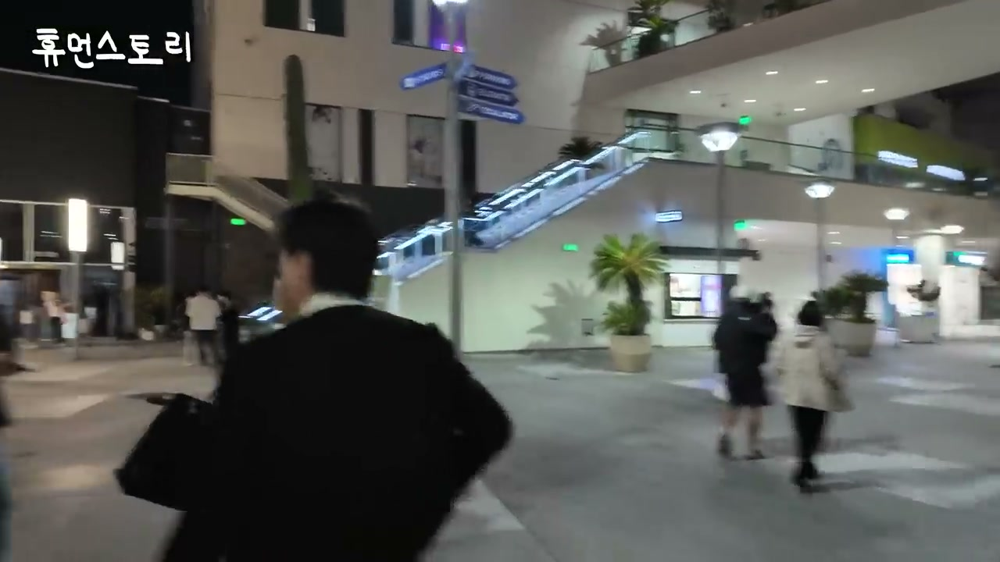
2편은 LA 인쌩맥주 앞에서 젊은 손님들이 릴스와 챌린지를 찍고 K팝 춤을 추는 장면에서 본격적으로 시작된다. 여기서 중요한 점은 인쌩맥주가 단순히 술과 안주를 파는 공간이 아니라, 외국인들이 한국 문화를 몸으로 소비하고 촬영해 공유하는 장소가 되었다는 것이다. 제작진은 외국인 손님들이 인쌩맥주 앞에서 안무를 따라 추는 모습을 보며 놀라고, 즉석에서 “휴먼스토리 화이팅”을 외치게 하는 장난스러운 상황도 이어진다.
이 장면은 브랜드가 해외로 나갈 때 제품만 옮겨서는 부족하고, 소비자가 스스로 콘텐츠를 만들고 싶어지는 공간성이 필요하다는 것을 보여준다. K팝 춤, 릴스, 챌린지, 한국식 술집 간판, 한옥 콘셉트가 한 덩어리로 작동한다. 영상은 이를 과장된 설명으로 풀기보다, 손님들이 직접 춤추고 외치는 모습으로 보여준다. 그래서 LA 인쌩맥주의 경쟁력은 메뉴판 안에만 있는 것이 아니라, 매장 앞과 매장 안에서 벌어지는 참여형 분위기까지 포함한다.
LA 부에나파크 소스몰점에 도착한 뒤, 제작진은 매장 규모가 어마어마하다고 반응한다. “한국에 외국인들이 가득 찬 느낌”이라는 말은 이 공간이 한국식 콘셉트를 유지하면서도 현지 손님으로 채워지고 있음을 압축한다. 팀장은 최근 외국 손님이 부쩍 많아졌다고 말하고, 출연진은 손님들의 옷차림과 분위기를 보며 핫플레이스처럼 받아들인다.
정승민 대표는 인쌩맥주의 콘셉트를 “한옥 펍”이라고 설명한다. 그는 이 콘셉트가 미국에서 통할 수 있었던 배경으로 K팝 관련 애니메이션과 한류 콘텐츠에서 한옥 이미지가 많이 노출된 점을 든다. 미국 사람들에게 한옥은 더 이상 낯설기만 한 전통 양식이 아니라, 한국 문화의 세련된 상징처럼 받아들여지고 있다는 것이다. 이 말에서 핵심은 외식 브랜드가 대중문화가 만들어놓은 이미지를 영리하게 받아먹을 수 있다는 점이다.
정 대표가 말한 “이미지 브레이킹”은 기존의 낯선 한국식 인테리어가 한류 콘텐츠를 통해 친숙하고 매력적인 코드로 바뀌었다는 뜻에 가깝다. 한옥 콘셉트는 독특함을 주지만, 동시에 이미 K콘텐츠로 학습된 이미지라 진입 장벽을 낮춘다. 그래서 매장 디자인은 단순한 장식이 아니라 해외 소비자에게 “한국적인데 멋있다”는 즉각적 인식을 만드는 브랜딩 장치가 된다.
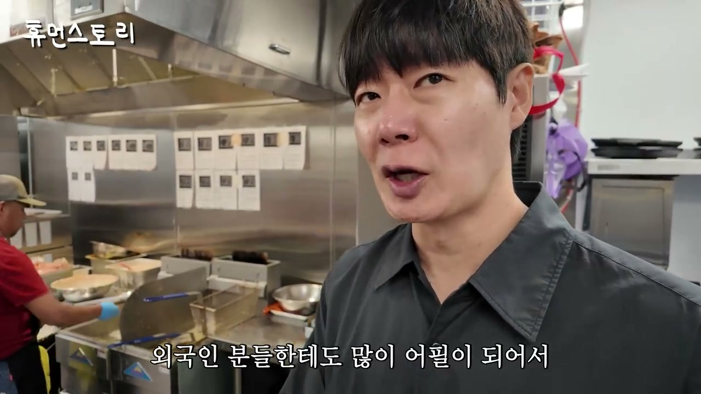
이어 제작진은 직원에게 한국인인지, LA에 온 지 얼마나 됐는지 묻는다. 직원은 한국인이며 LA에 온 지 5년 정도 되었고, 유학이 아니라 이민으로 와 부모님과 함께 살고 있다고 답한다. 이 대화는 해외 매장이 현지 인력과 교민 사회의 연결망 위에서 운영된다는 점을 보여준다. 단순 파견 운영이 아니라, 현지에 사는 한국계 구성원들이 서비스 경험을 만든다.
주방으로 들어가면서 살얼음 맥주가 소개된다. 살얼음 맥주는 인쌩맥주의 핵심 제품 차별화 요소로, 뒤에서도 계속 외국인 손님에게 먹히는 이유로 언급된다. 오픈 후 1시간 정도면 주방이 전쟁터처럼 바뀐다는 설명은 매장의 회전과 주문량이 상당하다는 간접 증거다. 마감 전에 청소해둔 주방이 곧바로 바빠진다는 말은 매장의 실제 수요를 보여준다.
메뉴 소개도 구체적이다. 직원은 치킨이 유명하고, 특히 분모자 폭탄 지코닭이 외국인에게도 많이 어필돼 1위 메뉴라고 설명한다. 분모자는 떡과 비슷하지만 떡볶이보다 식감이 좋다고 설명되고, 지코닭은 감칠맛이 있으며 맥주와 잘 어울린다고 평가된다. 크림카레떡볶이, 베이컨치즈감자전도 소개되는데, 감자전은 전 메뉴 중 인기 메뉴로 언급된다.
이 대목에서 인쌩맥주의 메뉴 전략은 순수 한식이라기보다 한국식 술집의 확장형 메뉴에 가깝다. 한식 기반이지만 치킨, 피자, 스키야키 등 여러 장르를 품고 있다. 한식·중식·일식·양식까지 다 한다는 설명은 현지 손님에게 익숙한 맛의 접점을 넓히면서도 한국식 주점의 정체성을 유지하려는 전략으로 읽힌다. 대형 매장인 120평 규모, 많은 직원, 다양한 메뉴는 모두 “현지 대형 외식 공간”으로서의 운영 난도를 높이지만, 브랜드 파워와 메뉴 차별성으로 이를 감당한다.
제작진은 120평이면 대형 매장이고 직원도 많은데 처음 차릴 때 무섭지 않았냐고 묻는다. 현지 운영자는 잘 될 것이라는 브랜드 파워를 믿고 시작했다고 답한다. 한국 손님들은 이미 인쌩맥주 브랜드를 알고 있었고, 외국 손님에게는 살얼음 맥주가 어필될 수 있다고 판단했다. 즉 초기 수요를 한국인 인지도와 외국인 호기심이라는 두 축으로 계산한 것이다.
이 말은 해외 진출에서 브랜드의 사전 인지도가 얼마나 중요한지를 보여준다. 해외의 한국인 고객층은 초기 매출과 입소문을 만드는 기반이 되고, 외국인 고객층은 성장성과 확장성을 만든다. 살얼음 맥주는 미국 현지에 없는 제품 경험이라 차별화가 되고, 한옥 펍 콘셉트는 콘텐츠 친화적인 경험을 제공한다. 이 조합이 대형 매장을 운영할 수 있는 심리적 근거가 된다.
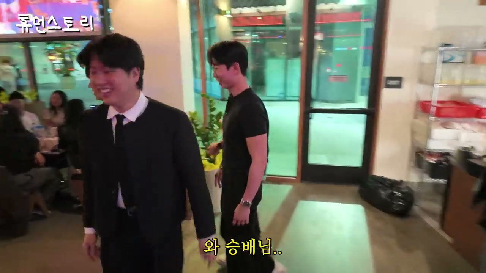
다음 장면에서는 외국인 손님 중에는 음식보다 맥주만 마시고 가는 손님도 있다고 설명된다. 제작진이 살얼음 맥주가 외국인에게 먹히는지 묻자, 직원은 너무 좋아한다고 답한다. 미국 현지에는 이런 스타일의 맥주가 흔하지 않기 때문에 신선하게 받아들인다는 설명이 이어진다. 제품의 차별화가 문화적 호기심과 결합해 방문 이유가 되는 셈이다.
제작진은 손님들과 같이 술을 마시며 건배를 시도한다. “아는 분들이냐”는 질문에 “방금 친구 됐다”고 답하는 장면은 현장 분위기의 개방성을 보여준다. 손님들과 “치얼스”를 외치고, “We are the world” 같은 농담을 던지며, 시원해 보이는 살얼음 맥주를 함께 즐긴다. 이는 브랜드 체험이 메뉴 설명보다 훨씬 빠르게 정서적 연결을 만든다는 사례다.
동시에 승배님을 알아보는 팬들이 많다는 농담 섞인 장면도 나온다. 코가 크다는 식의 농담, 사람들이 알아본다는 반응은 예능적 리듬을 만들지만, 그 안에서도 손님과 제작진 사이의 거리감이 빠르게 줄어든다. 인쌩맥주가 외국인 손님에게 “낯선 한국 술집”이 아니라 함께 어울릴 수 있는 공간으로 작동한다는 점이 강조된다.
인쌩맥주 LA 매장에서는 다소 늦은 개업식도 진행된다. 대표는 느낌을 줘야 하므로 사장님이 준비해주셨다고 설명하고, 모두가 “인쌩맥주 화이팅”을 외친다. 외국인 손님들도 이를 함께 축하해주는 장면은 브랜드가 현지 커뮤니티 안에 이미 들어가 있음을 보여준다.
제작진은 안산에서 처음 장사할 때 이렇게 될 줄 알았냐고 묻는다. 정승민 대표는 전혀 몰랐다고 답한다. 이어 그는 “물 들어올 때 노 저어야 한다”는 식의 말을 꺼내며, 물이 들어오는 줄 알고 열심히 노를 젓다 보니 계속 기회가 생겼다고 설명한다. 그 결과 프랜차이즈 회사가 되고, 가맹점이 많이 늘어났다는 흐름이다.
이 대목은 정 대표의 성장관을 잘 보여준다. 그는 처음부터 미국 진출이나 대형 프랜차이즈를 완벽히 설계한 인물로 그려지지 않는다. 대신 기회가 왔을 때 빠르게 움직이고, 그 기회가 다음 기회를 만들도록 실행한 사람으로 묘사된다. 중요한 것은 운을 기회로 바꾸는 반복 실행이다.
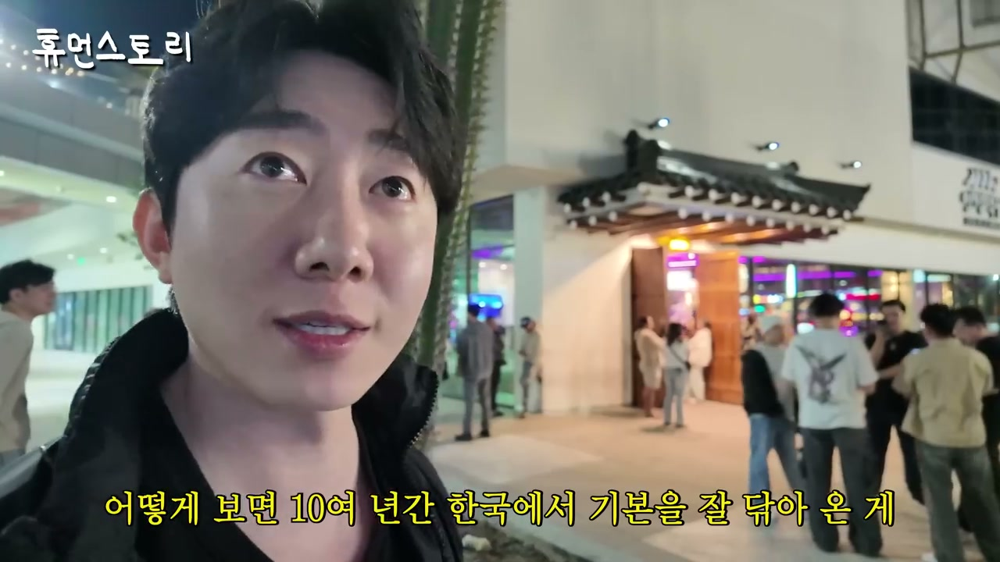
미국까지 와서 매장을 연 것에 대해 정승민 대표는 꿈만 같은 일이라며 더 열심히 하겠다고 말한다. 이때 눈가가 촉촉해졌다는 반응이 나오고, 울어도 되냐는 농담도 이어진다. 매장 앞에는 웨이팅하는 손님들이 있고, 이를 보며 제작진은 한류가 더 이상 단순한 유행이 아니라고 말한다. 한국 음악을 즐기고, 한국 춤을 따라 하는 현지인의 모습이 그 판단의 근거다.
목표에 대한 질문도 이어진다. 한국에서는 700개까지 매장을 열어봤다고 전제한 뒤, 미국에서는 몇 개까지 열고 싶은지 묻자 정 대표는 최소 1,000개는 나가야 하지 않겠냐고 답한다. 미국에서 계속 오픈해보니 점점 자신감이 생긴다고도 말한다. 직접 와서 보니 한국에서 10여 년간 기본을 다져온 것이 미국에서 잘 발휘되고 있다는 판단이다.
이 지점에서 “연습게임”이라는 비유가 나온다. 한국에서의 10여 년은 단순 과거 실적이 아니라, 미국 진출을 위한 실전 훈련처럼 작동했다는 뜻이다. 한국 시장에서 검증된 운영, 메뉴, 브랜딩, 마케팅 경험이 미국 시장에서 그대로 혹은 변형되어 통하고 있다. 그래서 미국 1,000개 목표는 허황된 숫자라기보다 현장 반응을 보고 생긴 자신감의 표현으로 제시된다.
정승민 대표는 자신들이 운영하는 매장들이 가성비 있는 매장을 선호한다고 말한다. 인쌩맥주도 그렇고, 이자카야 시선도 그렇고, 다른 매장들도 음식을 조금 저렴하게 판매한다고 설명한다. 중요한 것은 저렴한 가격이 손해가 아니라는 관점이다. 가격을 낮추면 자리가 채워지고, 사람이 많은 모습을 보여줄 수 있기 때문이다.
그는 음식점은 사람들이 많은 곳을 찾아가게 되어 있다고 말한다. 지나가다가도 사람이 많으면 “여기 맛집인가 보다”라고 생각하게 된다는 것이다. 여기서 “사람이 제일 좋은 인테리어”라는 핵심 문장이 나온다. 아무리 비싼 인테리어를 해도 손님이 없으면 그 인테리어는 쓸모가 없다고 본다.
이 철학은 단순한 박리다매 논리가 아니다. 낮은 가격은 고객 유입을 만들고, 고객 유입은 매장 분위기를 만들며, 그 분위기는 다시 신규 고객을 부른다. 따라서 할인이나 저렴한 가격은 단순 비용이 아니라 마케팅 비용처럼 기능한다. 여기에 본사 차원의 마케팅까지 결합되면 좋은 성과가 난다는 설명이다.
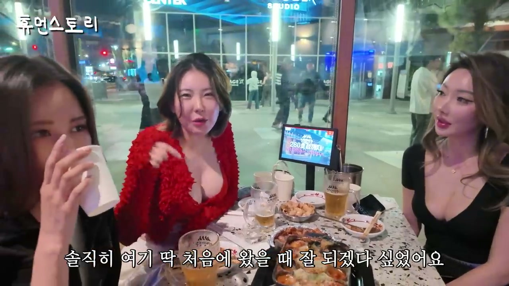
LA 매장에서 만난 한국계 손님들은 이곳을 어떻게 알게 되었는지 설명한다. 한 손님은 아는 언니가 핫한 곳이 있다고 해서 왔다고 말하고, 또 다른 손님은 친구들이 유명하다고 해서 왔다고 말한다. “한 번쯤 와봐야 한다”는 주변 추천이 방문 동기였다는 점은 인쌩맥주가 현지에서 입소문형 장소가 되었음을 보여준다.
손님들은 한국인 정체성을 갖고 있지만 한국어를 아주 잘하지는 못하는 경우도 있다. 제작진이 한국말을 할 줄 아냐고 묻고, 남자친구가 있냐는 질문은 알아듣는 장면이 예능적으로 이어진다. 이 장면은 재미 요소이면서도, 한국계 2세나 현지화된 교민 고객에게도 K술집이 문화적 연결점이 될 수 있음을 보여준다.
한 손님은 처음 왔을 때 잘 되겠다고 생각했다고 말한다. 이유는 이런 식으로 잘 만들어진 술집이 별로 없었기 때문이다. 맥주도 어떻게 숙성했는지 물어봤고, 뭔가 다르다고 느꼈다고 한다. 일 끝나고 와서 한잔 마시면 최고라는 평가도 나온다. 이는 브랜드가 한국인 고객에게도 “한국식이어서 반갑다” 수준을 넘어, 실제 제품과 공간 경쟁력을 인정받고 있음을 보여준다.
LA 일정이 끝난 뒤 일행은 공항에서 아침을 먹고 버지니아행 비행기를 탄다. 제작진은 음식이 남은 것을 보고 입에 맞지 않았는지 묻지만, 정 대표는 햄버거도 먹고 이것도 먹어서 배부르게 먹었다고 답한다. 실제로 촬영팀은 매번 메뉴를 10개, 11개씩 시키고 남자 다섯 명이 인당 2개씩 먹는 식으로 엄청난 양을 먹었다고 설명한다. 특히 휴먼스토리 대표가 많이 먹는다는 농담도 이어진다.
버지니아까지는 비행기로 5~6시간 정도 걸리는 것으로 언급된다. 제작진은 비행기를 이틀 내내 타는 것 같다고 말하며, 세계적인 스타들이 이동을 반복하는 마음을 조금 이해할 것 같다고 한다. 정 대표도 해외 출장을 다니는 사람들이 정말 힘들 것 같다고 공감한다. 단순히 매장을 여는 장면뿐 아니라, 해외 확장에는 긴 이동, 시차, 식사, 체력 관리라는 보이지 않는 비용이 따른다.
비행기 안에서는 기내식과 언어 장벽에 대한 농담도 나온다. 정 대표는 대한항공이면 밥 안 먹고 잔다고 말할 것 같은데, 영어를 못해서 그냥 계속 기내식을 받아 먹는다고 웃는다. 안내방송을 알아듣느냐는 질문에는 그럴 리가 없다고 답한다. 이 장면은 큰 사업을 하는 대표도 해외 현장에서는 언어와 문화의 불편함을 그대로 겪는다는 인간적인 면을 보여준다.
비행 중 음료를 받으며 일행은 건배를 한다. 회사 이름이 무엇이냐는 질문에 정 대표는 위벨롭먼트라고 했고 최근에는 WD로 사명을 바꿨다고 설명한다. 이어 WD의 미국 진출을 위하여 건배한다. 이 장면은 회사의 정체성이 국내 프랜차이즈 운영사를 넘어 해외 확장 기업으로 재정의되고 있음을 보여준다.
사명을 WD로 바꿨다는 말은 단순 약칭 변경 이상의 의미를 갖는다. 해외 시장에서 부르기 쉽고 확장성 있는 이름이 필요했을 가능성이 크다. 영상은 이를 깊게 설명하지는 않지만, 미국 진출이라는 맥락에서 사명 변경은 브랜드 포트폴리오를 글로벌하게 가져가려는 신호로 읽힌다.
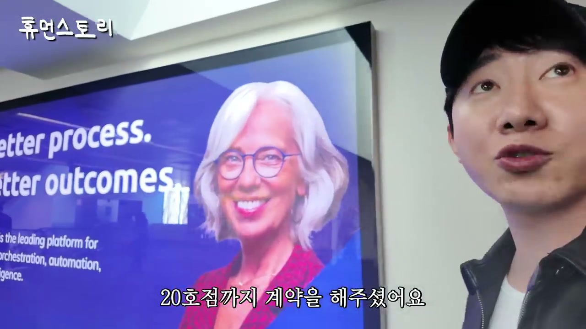
버지니아에 도착한 뒤, 제작진은 한국에는 도대체 언제 돌아가냐고 농담한다. 정 대표는 이제 카메라 긴장을 크게 하지 않고 “그러려니 한다”고 말한다. 방송은 앞으로 혜성이가 하는 걸로 하자는 농담도 나오고, 왜 최혜성 대표를 “바지 사장”이라고 부르는지에 대한 이야기도 이어진다. 정 대표는 혜성이가 비주얼도 좋고 젊은 나이에 좋은 성과를 내서 시기와 질투가 있는 걸까 하는 농담을 던진다.
이후 WD가 운영하는 브랜드들이 구체적으로 정리된다. 인쌩맥주, 이자카야 시선, 1943, 브샤브샤라는 샤브샤브 브랜드, 정직화벌집삼겹, 43번지 혼술바가 언급된다. 정직화벌집삼겹은 6개월 만에 100호점을 달성했고, 43번지 혼술바는 20호점까지 계약됐다고 한다. 이 수치는 WD가 단일 브랜드 회사가 아니라, 여러 콘셉트를 빠르게 시장에 안착시키는 멀티 브랜드 프랜차이즈 회사임을 보여준다.
제작진은 하는 것마다 잘 되는 이유를 묻는다. 정 대표는 자영업 8년, 프랜차이즈 대표 8년의 경험을 언급한다. 자영업 시절에도 안산에서 가게들이 잘됐던 이유를 설명해달라는 질문에, 당시 경쟁 가게들은 연세가 많은 분들이 운영하는 경우가 많았다고 답한다. 본인은 27살이었고, 젊은 감각과 마케팅을 조금만 잘해도 경쟁에서 우위를 점할 수 있었다고 말한다.
그 결과 당시 한 달에 2~3억 정도 벌었던 것 같다고 말한다. 제작진이 지금까지 100억 이상은 벌었겠다고 하자, 회사는 많이 벌었지만 개인 자산은 코로나 때 많이 잃었다고 솔직히 답한다. 이 전환은 성공담의 흐름을 현실적인 사업 리스크로 바꾼다.
코로나 시기 정 대표는 직영점을 많이 운영하고 있었다. 주점 브랜드 특성상 영업시간 제한의 타격이 컸고, 코로나가 그렇게 길어질 줄 몰랐다고 한다. 월에 1억씩 날아갔고, 인건비와 임대료가 계속 빠져나갔다. 직영점이 10개 넘게 있었고, 매장 하나당 1,000만~2,000만원씩 마이너스가 나는 구조였다고 설명한다.
그 상태가 약 2년 정도 지속되었고, 중간에 폐업도 많이 했다. 자영업자 때 모은 돈이 코로나 때 많이 날아갔다고 말한다. 이 부분은 프랜차이즈 성장의 이면을 보여준다. 확장된 직영점은 잘될 때는 매출의 기반이지만, 외부 충격이 오면 고정비가 동시에 터지는 위험이 된다.
정 대표의 이야기는 외식업에서 규모가 곧 안전을 의미하지 않는다는 점을 보여준다. 오히려 규모가 클수록 임대료, 인건비, 재고, 운영비 부담이 동시에 커진다. 코로나 같은 외부 변수 앞에서는 개인 자산까지 영향을 받을 수 있다. 그래서 뒤이어 나오는 “요즘 자영업은 쉽게 생각하면 안 된다”는 조언이 더 현실적으로 들린다.
정 대표는 예전에는 퇴직하고 치킨집을 차린다는 식의 이야기가 많았지만, 지금은 그런 식으로 쉽게 접근하면 절대 안 된다고 말한다. 이유는 젊은 친구들이 장사를 너무 잘하기 때문이다. 이들은 감각이 뛰어나고 브랜딩도 잘한다. 시장 전체의 수준이 올라갔다는 진단이다.
그렇다면 정 대표는 지금 어떻게 승부를 보고 있을까. 그는 젊은 창업자들에게 부족할 가능성이 큰 것은 자본금이라고 본다. 본인은 회사를 오래 운영해왔기 때문에 자본금으로, 돈으로 “찍어 눌러야” 하지 않겠냐고 표현한다. 이 말은 거칠지만, 경쟁 사회에서는 전략을 잘 짜는 것이 중요하다는 뜻으로 이어진다.
마케팅에서는 최혜성 대표가 많은 도움을 주었다고 설명한다. 최 대표는 정 대표와 12년을 함께 일했고, 그 과정에서 많이 레벨업됐다고 평가된다. 방송에서 “바지사장”이라고 농담하지만 실제로는 일을 굉장히 잘한다는 해명이 나온다. 이 대목은 WD의 성장 방식이 대표 1인의 감각만이 아니라, 장기간 함께 일한 팀의 축적된 능력에 기반한다는 점을 보여준다.
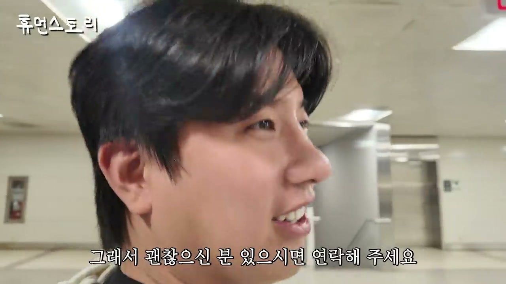
승배님도 개인 장사를 한 적이 있다고 말한다. 안산에서 “노네임”이라는 힙합 펍을 운영했는데, 이름처럼 사라졌다고 농담한다. 이 경험 때문에 정승민 대표와 최혜성 대표를 알게 되었다고 한다. 안산에서 정 대표는 이미 유명한 자영업자였고, “안산 백종원”이라는 말까지 들었다고 설명한다.
승배님은 정 대표가 건드리는 장르마다 다 대박이 난다는 소문을 들었다고 말한다. 이 말은 앞서 정 대표가 말한 27살 안산 자영업 시절의 성공과 연결된다. 단순히 프랜차이즈 대표가 된 뒤 유명해진 것이 아니라, 지역 상권에서 이미 장사 잘하는 사람으로 알려졌던 것이다.
그러나 승배님은 한편으로 아쉬운 점도 말한다. 정 대표가 결혼을 하지 않고 계속 일만 한다는 것이다. 돈이 많으니 괜찮은 분이 있으면 연락해달라는 농담도 이어진다. 이 부분은 사업가의 성공과 개인 삶의 균형이라는 주제를 웃음 속에 끼워 넣는다.
버지니아 숙소에 도착하기 전후로 정 대표가 한식에 대한 갈증을 드러내는 장면이 나온다. 제작진은 정 대표가 좋아하는 삼겹살, 된장찌개, 김치찌개, 냉면을 준비했다고 말한다. 정 대표가 자신이 좋아하는 걸 어떻게 알았냐고 묻자, 아까 제육볶음을 먹고 싶다고 하지 않았냐는 대답이 돌아온다. 정 대표는 김치가 너무 먹고 싶다고 말하고, 아침에 인앤아웃 버거를 먹은 뒤라 느끼할 만하다는 농담이 이어진다.
이 장면은 해외 출장의 현실적인 피로를 잘 보여준다. 미국 진출이라는 큰 그림 속에서도, 장시간 이동과 현지 음식, 계속되는 촬영은 체력적으로 부담이다. 한식이 단순한 메뉴가 아니라 컨디션 회복과 정서적 안정의 역할을 한다. 이후 버지니아 1943으로 이동하는 흐름은 LA 인쌩맥주에서 버지니아 1943으로 이어지는 WD 해외 포트폴리오 점검의 다음 단계다.
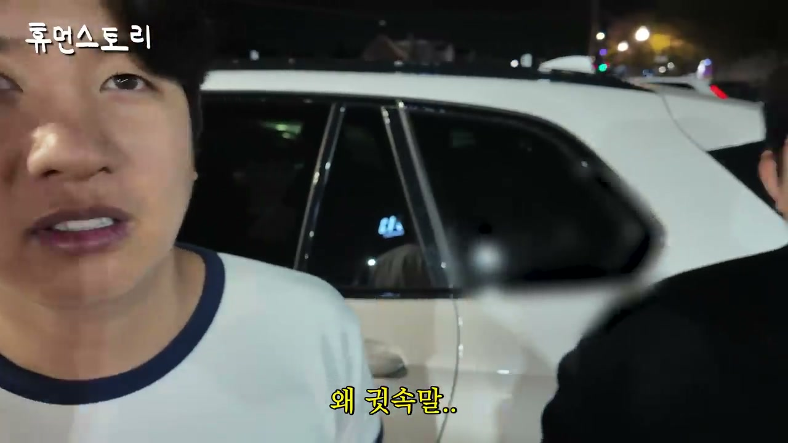
버지니아 1943으로 이동하면서, 차를 태워주는 사람은 전 점주였다고 소개된다. 그는 1943을 운영하다가 양도양수를 했고, 현재는 여성 점주가 운영한다고 설명된다. 그는 미국에 한국 문화를 알리고 싶은 꿈이 있어서 브랜드를 찾다가 1943에 관심을 갖고 회사에 연락했다고 말한다. 현재는 대표들과 친해져 가이드도 하고 좋은 시간을 보내려 한다고 설명한다.
1943 매장은 110평 정도로 소개된다. 간판이 크게 되어 있고, 주변 차량들이 1943 손님 차량이라는 말도 나온다. 매장에 들어서자 한국 1943과 거의 비슷한 인테리어가 유지된다고 설명된다. 다만 매장 포맷에 따라 조금씩 달라질 수 있고, 샹들리에는 1943의 시그니처 아이덴티티로 소개된다. 층고가 높으면 큰 샹들리에를 위에 달고, 층고가 낮으면 스탠드 형태로 세워둔다.
이 설명은 해외 진출에서 브랜드 일관성과 현장 적응의 균형을 보여준다. 핵심 아이덴티티는 유지하되, 건물 구조와 층고에 맞춰 구현 방식을 바꾼다. 같은 1943이라도 완전히 복제하는 것이 아니라, 포맷에 따라 조정하는 것이다. 프랜차이즈의 핵심은 표준화이지만, 해외 매장에서는 물리적 환경에 맞춘 유연성도 필요하다.
1943이라는 브랜드명은 정승민 대표에게 매우 의미 있는 숫자라고 설명된다. 어머니가 1943년생이라서 1943으로 이름을 지었다. 어머니는 걱정이 많으셨고, 정 대표는 어머니 나이로 가게 이름을 지어 성공한 모습을 보여드리고 싶었다고 말한다. 그 브랜드가 한국을 넘어 미국까지 오픈하게 된 것은 개인적 의미와 사업적 성취가 겹치는 지점이다.
버지니아 1943에서도 T오더를 사용한다는 점이 언급된다. 미국에서는 서버를 부를 때 큰소리로 외치거나 손을 드는 문화가 아니고, 계속 올 때까지 기다려야 하는 경우가 많다고 설명한다. 며칠 지내보니 그런 문화가 있는 것 같다고 말한다. 그런데 T오더가 있으면 기다리지 않아도 되고 바로 주문할 수 있어 점주들이 매우 만족한다고 한다.
이 대목은 한국 외식업의 운영 기술이 해외에서 강점이 될 수 있음을 보여준다. 단순히 음식과 인테리어만 수출하는 것이 아니라, 주문 시스템과 서비스 효율까지 함께 가져가는 것이다. 현지 문화의 불편함을 한국식 디지털 주문 시스템으로 해결하면, 고객 경험과 점주 운영 효율이 동시에 좋아진다. 이것이 프랜차이즈 시스템 수출의 중요한 축이다.
정 대표는 자신이 만든 브랜드를 다양한 인종들이 좋아해주는 것을 보며 전 세계가 내 손님인 것 같은 느낌이라고 말한다. 이 말은 해외 진출의 감정적 성취를 잘 보여준다. 한국에서 만든 술집 브랜드가 한국인만이 아니라 다양한 배경의 손님에게 소비되는 순간, 브랜드는 교민 비즈니스에서 글로벌 비즈니스로 넘어간다.
버지니아 1943에는 DJ 부스도 있고, 점주가 이벤트성으로 DJ를 불러 디제잉을 한다고 설명된다. DJ 공연은 단순한 부가 이벤트가 아니라 1943을 술과 안주만 파는 곳이 아니라 놀 수 있는 공간으로 만든다. 손님 인터뷰에서도 다른 한국 술집보다 분위기가 더 활동적이라는 평가가 나온다. 이는 1943의 경쟁력이 음식뿐 아니라 에너지와 체험에 있음을 보여준다.
정 대표는 메뉴도 직접 먹어보며 개선점이 있는지 확인해야 한다고 말한다. 대표가 현장에 왔으니 그냥 둘러보는 것이 아니라, 음식과 운영을 체크하는 것이다. 메뉴를 좋아하냐는 질문에는 다 좋다고 답하지만, 실제 목적은 현지 매장의 품질 점검이다. 해외 진출이 성공하려면 오픈 자체보다 지속적인 품질 관리가 중요하다는 점이 드러난다.
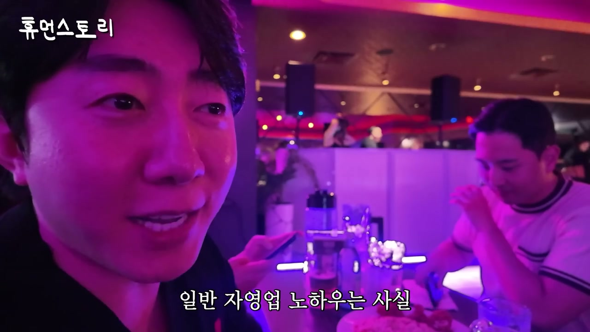
버지니아 1943에서도 손님 인터뷰가 이어진다. 직원은 손님 중 절반 이상은 한국 분인 것 같다고 말한다. 또 한 손님은 자신이 100% 한국인이고, 미국에 온 지 3년 된 유학생이라고 소개한다. 한국 술집 다른 곳에서도 일해봤는데, 이곳은 분위기가 완전히 다르고 조금 더 활동적이라고 평가한다.
손님들은 메뉴가 언제 나오는지 기다리며 맥주를 마신다. 이 장면은 매장이 단순히 식사 공간이 아니라 대기와 음주, 공연과 대화가 함께 있는 술집 경험임을 보여준다. DJ가 “Are you ready?”를 외치고 카운트다운을 하며 공연을 이어가는 장면은 1943이 현지에서 클럽형 에너지까지 흡수하고 있음을 보여준다.
또 다른 손님은 친구들이 이곳을 좋아해서 함께 자주 온다고 말한다. 근처 20분 거리에 살고, 한국 음식 중 특히 떡볶이가 자신이 먹어본 것 중 가장 맛있다고 평가한다. “멈출 수가 없다”는 반응, 평소 한국 바비큐를 많이 먹는다는 말은 K푸드가 현지인의 일상적 외식 선택지로 들어갔다는 것을 보여준다.
영상 말미, 정 대표는 일반 자영업 노하우는 유튜브에 너무 많이 나와 있고 자영업 고수들도 많다고 말한다. 자신이 또 자영업 이야기를 하면 뻔한 이야기가 될 것 같아서, 프랜차이즈에 대해 말하고 싶다고 한다. 그는 프랜차이즈 회사가 잘 성장하기 위해 중요한 요소로 세 가지를 제시한다. 첫 번째는 브랜딩, 두 번째는 마케팅, 세 번째는 트렌드를 빨리 읽는 능력이다.
브랜딩의 본질에 대해서는 매우 구체적으로 설명한다. 이름, 로고, 내부 인테리어, 조명 하나하나, 음식, 음식 가격, 어떤 서비스를 할 것인지까지 모두 손님에게 어떤 메시지로 전달되고 어떻게 각인될지를 설계해야 한다고 말한다. 즉 브랜딩은 예쁜 로고나 멋진 인테리어 하나가 아니라, 고객이 브랜드를 기억하는 총체적 경험이다. 이 본질을 잘 구성해야 프랜차이즈가 성장할 수 있다고 본다.
마케팅은 본질이 좋아도 알리지 않으면 의미가 없다는 관점으로 설명된다. 예전에는 네이버 블로그만 잘 써도 음식점에 줄이 섰고, 이후에는 페이스북으로 넘어갔고, 다음에는 인스타그램으로 넘어갔다고 말한다. 지금은 쇼츠의 시대라고 진단한다. 따라서 잘 만든 브랜드를 시대에 맞는 채널로 잘 알려야 성과를 낼 수 있다.
트렌드 역시 매우 중요하다고 말한다. 트렌드를 빨리 읽어야 하고, 본질과 마케팅이 모두 있어도 시장의 흐름을 놓치면 성과가 제한될 수 있다. 정 대표는 한국 자영업자들의 수준이 많이 올라왔고, 해외에 나가면 너무 잘할 것이라고 본다. 그래서 많은 자영업자가 프랜차이즈에 도전하고, 더 나아가 미국이나 다른 나라에도 도전해 좋은 성과를 냈으면 좋겠다고 말한다.
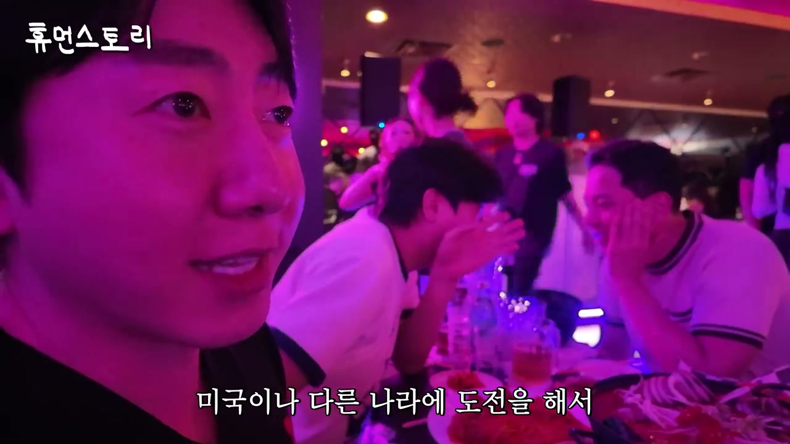
버지니아 1943에서는 메뉴를 하나씩 시켜 먹어보는 장면도 나온다. 로제파스타는 1943에서 제일 잘 팔리는 메뉴로 소개된다. 짬뽕탕, 로제떡볶이, 새우퐁듀도 함께 언급된다. 미국 사람들이 떡볶이를 굉장히 좋아한다는 설명도 나온다.
로제파스타에 대한 설명은 1943의 메뉴 혁신을 보여준다. 정 대표는 12년 전에는 술집에서 파스타를 팔지 않았고, 파스타는 이탈리안 음식점에서만 파는 음식이었다고 말한다. 술집에서 파스타를 판 것이 자신이 최초인지는 모르겠다고 조심스럽게 말한다. 자신이 최초라고 하면 다른 사람이 “내가 최초인데”라고 할 수 있기 때문에 그렇게 말하지 않겠다고 농담한다.
그러나 로제파스타가 1943에서 잘되면서 많은 술집에 비슷한 로제파스타 메뉴가 들어간 것으로 알고 있다고 설명한다. 이 말은 1943이 단순히 트렌드를 따라간 것이 아니라, 한때 술집 메뉴 트렌드를 만드는 쪽에 가까웠다는 자신감을 드러낸다. 로제파스타, 로제떡볶이, 짬뽕탕, 새우퐁듀는 모두 술집 안주이면서도 젊은 고객이 사진 찍고 공유하기 좋은 메뉴다. 브랜딩과 메뉴 기획이 연결되는 사례다.
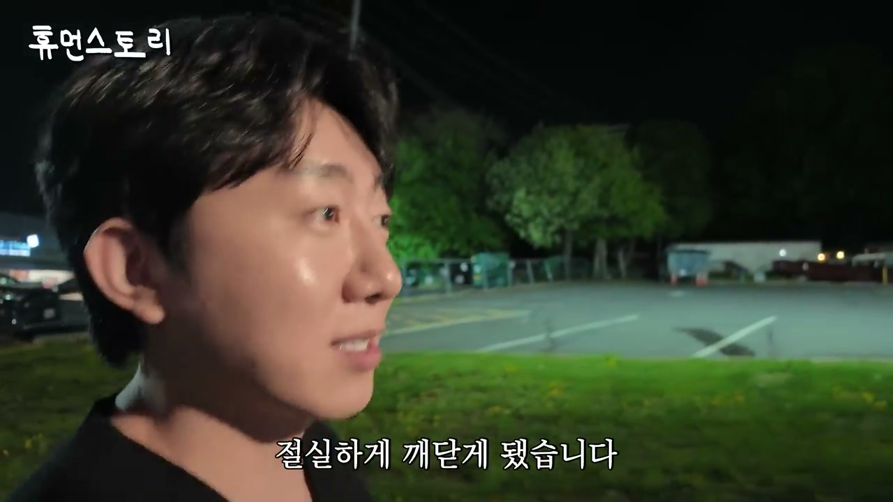
마지막 일정에서 제작진은 장기간 촬영해본 소감을 묻는다. 정 대표는 자신이 역시 카메라 체질, 방송 체질은 아닌 것 같다고 말한다. 아무나 할 수 있는 것이 아니라는 걸 절실히 깨달았다고 한다. 앞서 카메라에 적응하고 농담도 하던 모습과 달리, 장기간 촬영의 부담을 솔직히 인정하는 장면이다.
마지막으로 하고 싶은 말에서 정 대표는 한국에서 700개 매장을 오픈시킨 노하우로 전 세계로 갈 준비는 됐다고 말한다. 전 세계에 있는 한인이나 외식업에 관심 있는 사람들이 연락해주면 좋겠다고 한다. 제작진은 이 영상을 보고 정 대표와 함께 사업할 파트너를 찾는 것이냐고 묻고, 정 대표는 맞다고 답한다. 그는 전 세계로 뻗어나가고 싶다고 분명히 말한다.
제작진은 이를 “외식업의 BTS”라고 표현한다. 그러자 BTS에게 영상편지를 하자는 농담이 이어지고, 정 대표는 K팝으로 전 세계 사람들에게 K문화를 알려줘서 감사하다고 말한다. 자신은 외식업 브랜드를 하고 있지만, 한국 기업들이 외국으로 많이 뻗어나가고 있는 것 같아 감사하게 생각한다고 한다. 마지막에는 BTS가 한국을 위해 열심히 활동해달라는 메시지로 마무리된다.
이 결말은 영상 전체의 주제를 압축한다. 정승민 대표는 단순히 술집 프랜차이즈를 해외에 열고 싶은 것이 아니라, K팝이 연 길 위에 K외식 브랜드를 올리고 싶어 한다. 한국 문화가 음악과 콘텐츠로 세계에 알려졌다면, 이제 음식과 술집 경험도 그 흐름을 탈 수 있다는 믿음이다. 그래서 마지막 “휴먼스토리 화이팅”은 예능적 인사이면서도, 한국식 외식업의 해외 확장 서사를 닫는 구호처럼 작동한다.
“물 들어올 때 노 저어야 된다.”
“사람이 제일 좋은 인테리어라고 생각해요.”
“한국에서는 700개까지 오픈을 해봤고, 미국에서는 최소한 1,000개는 나가야 되지 않을까요?”
“본질이 좋아도 알리지 않으면 의미가 없다고 생각해요.”
“첫 번째는 브랜딩, 두 번째는 마케팅, 세 번째는 트렌드를 빨리 읽는 게 중요하다고 생각합니다.”
“전 세계에 있는 한인 분들이나 외식업에 관심 있는 분들 연락 주시면 좋을 것 같아요.”
“전 세계로 뻗어나가고 싶습니다.”
이 파트의 핵심은 정승민 대표와 WD가 미국에서 단순히 한국 술집을 복제한 것이 아니라, K문화의 확산, 현지 고객의 체험 욕구, 한국식 운영 시스템, 가성비 전략, 메뉴 트렌드, 프랜차이즈 표준화를 결합해 글로벌 외식 브랜드를 만들려 한다는 점이다. LA 인쌩맥주는 K팝과 한옥 펍, 살얼음 맥주와 한국식 안주로 현지 손님을 끌어들이고, 버지니아 1943은 대형 매장, DJ 공연, T오더, 한국식 안주로 활동적인 K술집 경험을 제공한다.
정 대표의 사업 철학은 매우 실용적이다. 비싼 인테리어보다 손님이 많은 매장이 강력하고, 가격을 낮춰 자리를 채우는 것은 손해가 아니라 마케팅이 될 수 있다고 본다. 브랜드 본질은 이름·로고·인테리어·조명·메뉴·가격·서비스가 고객에게 어떤 메시지로 각인되는지까지 포함한다. 그리고 이 본질을 시대에 맞는 마케팅 채널, 특히 현재의 쇼츠 중심 트렌드에 맞춰 알려야 한다고 말한다.
또한 영상은 성공의 화려함만 보여주지 않는다. 정 대표는 안산에서 27살에 젊은 감각으로 경쟁 우위를 만들었고 한 달 2~3억을 벌었지만, 코로나 시기에는 직영점 10개 이상을 운영하며 월 1억씩 손실을 봤고 개인 자산도 크게 잃었다고 말한다. 이 경험 때문에 현재의 자영업을 쉽게 보면 안 된다고 경고한다. 젊은 창업자들의 수준이 높아졌고, 브랜딩과 마케팅 감각이 뛰어나기 때문에 전략과 자본, 시스템 없이는 경쟁하기 어렵다는 것이다.
마지막 시사점은 한국 외식업의 해외 가능성이다. 정 대표는 한국에서 700개 매장을 열어본 경험으로 세계 진출 준비가 됐다고 보고, 해외 한인 및 외식업 관심자들에게 파트너십을 제안한다. K팝이 세계인에게 K문화를 알렸다면, 이제 외식업도 그 기반 위에서 한국식 경험을 수출할 수 있다는 확신이 영상 전체를 관통한다. 인쌩맥주와 1943의 미국 사례는 K푸드가 단순 메뉴 수출을 넘어, 공간·음악·주문 시스템·가격 전략·콘텐츠화까지 함께 움직일 때 더 큰 확장성을 가진다는 것을 보여준다.
댓글
GitHub 이슈 기반 댓글 시스템입니다.